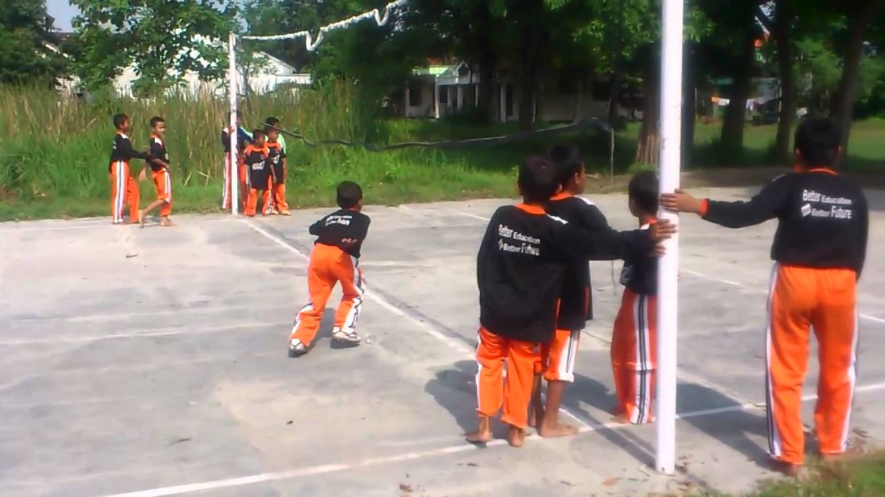

Bentengan: Rebut Benteng, Tawan Lawan

Sekilas Sejarah
Bentengan adalah permainan strategi beregu yang terinspirasi dari taktik perang merebut benteng musuh. Permainan ini sangat populer dan mengajarkan pentingnya kerja sama tim, kecepatan, kelincahan, dan penyusunan strategi untuk menyerang dan bertahan.
Alat & Persiapan
- Arena: Lapangan luas.
- Benteng: Dua buah tiang, pilar, atau pohon yang letaknya saling berjauhan sebagai "benteng" untuk masing-masing tim.
- Pemain: Dua tim dengan jumlah anggota yang sama (misalnya 4 lawan 4 atau lebih).
Cara Bermain
- Bagi Tim: Pemain dibagi menjadi dua tim. Setiap tim memilih "benteng"-nya masing-masing.
- Tujuan Permainan: Tujuan utama adalah menyentuh benteng lawan sambil meneriakkan "Benteng!".
- Menawan Lawan: Pemain dapat "menawan" anggota tim lawan dengan cara menyentuhnya. Tawanan akan ditempatkan di sekitar benteng musuh.
- Aturan Sentuhan: Pemain yang paling terakhir menyentuh bentengnya memiliki "kekuatan" paling tinggi. Ia bisa mengejar dan menyentuh lawan yang sudah lebih lama meninggalkan bentengnya.
- Membebaskan Tawanan: Anggota tim dapat membebaskan rekannya yang ditawan dengan cara menyentuh teman atau area tawanan (sesuai kesepakatan).
- Pemenang: Tim yang berhasil menyentuh benteng lawan adalah pemenangnya.